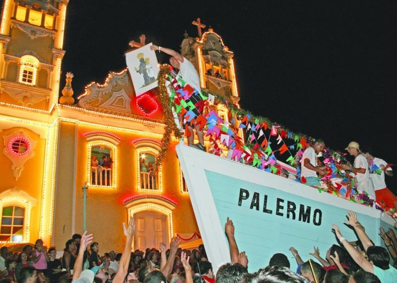
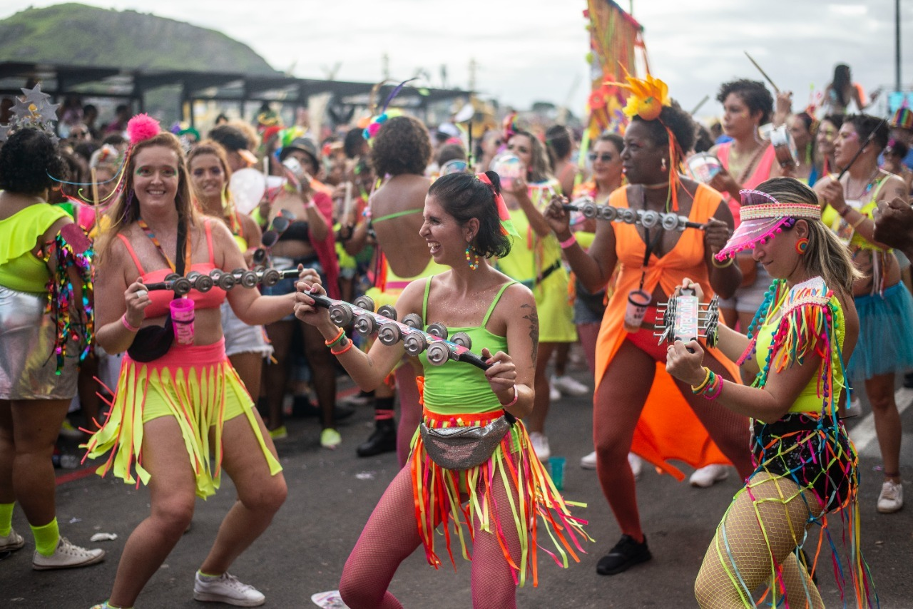

Explore a Cultura Capixaba
Conheça as tradições, festas e sabores únicos do Espírito Santo!
Cultura do Espírito Santo

Congo
Uma celebração vibrante com tambores, danças e muita cor.

Carnaval
O Carnaval no Espírito Santo é uma mistura de samba, maracatu e muito axé nas ruas de Vitória e cidades do interior.
Praias
Guarapari, Vitória e outras praias deslumbrantes!
Festividades Capixabas
O Espírito Santo é um estado de muitas cores, sons e ritmos. As festas e tradições são uma verdadeira expressão cultural e fazem parte da identidade do povo capixaba. Confira algumas das principais festividades:
- Festa de São Benedito - Uma das festas religiosas mais importantes, celebrada no mês de agosto, com muita dança, comida típica e devoção.
- Festa de Nossa Senhora da Penha - A maior festa religiosa do estado, com milhares de fiéis subindo a montanha até o Convento da Penha.
- Festival Jesus Vida Verão - é um evento religioso e cultural que acontece anualmente no Espírito Santo, geralmente durante as férias de verão. Organizado pela Comunidade Evangélica Vida, o evento tem como objetivo reunir jovens e famílias para uma experiência de fé, música, e diversão, com um enfoque em Jesus Cristo e em sua mensagem.
- Festival de Música de Guarapari - Festival musical com foco em artistas locais e regionais, realizado anualmente na praia de Guarapari.
- Baile Funk -om forte influência do funk carioca, mas com características próprias. Esses bailes se destacam pela mistura de ritmos, com letras que muitas vezes abordam temas como a realidade das periferias e a cultura local.
Gírias Capixabas
O capixaba tem um jeitinho todo especial de falar. Se você estiver em um bate-papo com um nativo, é bom conhecer algumas dessas gírias para se enturmar:
- Êta! - Expressão de surpresa ou admiração.
- Rock - Termo usado para se referir a festas, baladas, shows.
- Vixi! - Quando algo dá errado ou é inesperado.
- Parada! - Coisa, situação ou até uma ação (ex: "Essa parada é muito boa").
- Arreda! - Significa "sai fora" ou "afasta-se".
- Ficar de cara - Ficar surpreso, espantado ou admirado. Exemplo: "Eu fiquei de cara com a notícia!"
Danças Típicas Capixabas
A dança é uma parte muito importante da cultura capixaba, sendo expressa nas festividades, festas de rua e eventos culturais. Algumas danças típicas são:
- Catira - Dança popular de origem portuguesa, onde os dançarinos batem palmas e pisam com os pés para acompanhar o ritmo das músicas.
- Jongo - Com forte influência africana, essa dança é marcada por movimentos de corpo, expressões faciais e um ritmo contagiante.
- Samba - No Espírito Santo, o samba é muito presente no carnaval e em outras festas populares. Com seus batuques e coreografias, é uma verdadeira manifestação de alegria.